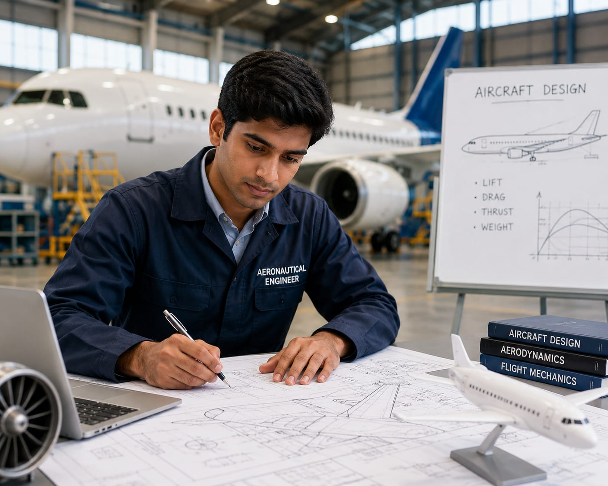

- Have you ever wondered how an airplane fly through the sky?
- Airplanes must be designed carefully to fly safely.
- They must be strong, balanced, and able to handle different weather conditions.
- The person who helps design and test these aircraft is called an Aeronautical Engineer.
- 👉 In simple words: Aeronautical Engineers design, test, and improve aircraft.
Aeronautical Engineer
👨✈️ What Do They Do?

🎓 Courses to Become an Aeronautical Engineer
After completing 10th, you can start your journey in aeronautical engineering through diploma-level courses.
Diploma in Aeronautical Engineering
Duration: 3 Years (6 semesters)
Eligibility: Pass in Class 10 (SSC) from a recognized board
Entrance Exam: AME CET / State Polytechnic Entrance Exams (like JEECUP, JEXPO)
📝 Exam Details
(Click on the exam name to see full details)
AME CET (National Level) State Polytechnic Entrance ExamsMerit Based: Some colleges offer admission without entrance exams.
After completing 12th with PCM, you can pursue a degree in aeronautical engineering to build strong technical knowledge in aircraft design and flight systems.
B.Tech / B.E. in Aeronautical Engineering
Duration: 4 Years (8 semesters)
Eligibility: 10+2 with Physics, Chemistry, and Mathematics (PCM)
Entrance Exam: JEE Main / JEE Advanced / University Level Exams(BITSAT, VITEEE) / State CETs (KCET, MHT CET)
📝 Exam Details
(Click on the exam name to see full details)
JEE Main JEE Advanced University Entrance Exams State Level CET ExamsAfter completing a diploma, you can directly enter the 2nd year of an engineering degree through lateral entry and continue your journey in aeronautical engineering.
B.Tech (Direct 2nd Year Entry)
Duration: 3 Years
Eligibility: 3-year Diploma in Aeronautical, Mechanical, or related field
Entrance Exam: State Lateral Entry Exams (LEET, JELET, OJEE)
Merit Based: Some colleges offer admission without entrance exams.
After graduation, you can specialize further in aeronautical or aerospace engineering to gain advanced knowledge in aircraft design, aerodynamics, and flight systems.
M.Tech / M.E. in Aeronautical Engineering
Duration: 2 Years
Eligibility: B.E. / B.Tech in Aeronautical, Aerospace, or related field
Entrance Exam: GATE
Merit Based: Some colleges offer admission without entrance exams.
Note:
Age limits, marks, and admission process may vary depending on the college or state.
These courses are available in many colleges and universities across India.
You can choose colleges based on your location, budget, and entrance exams.
🏛️ Top Colleges for Aeronautical Engineer
(Tap on a college to view the details)
After 10th Pass (Diplomas)
Indian Institute of Aeronautical Engineering (IIAE), Dehradun Nehru College of Aeroanutics and Applied Sciences, Coimbatore Hindustan Institute of Engineering Technology (HIET), Chennai Indian Institute for Aeronautical Engineering & Information Technology (IIAEIT), PuneAfter 12th Pass (Bachelor's Degrees)
Indian Institute of Technology (IIT) Madras, Chennai Indian Institute of Technology (IIT) Bombay, Mumbai Indian Institute of Technology (IIT) Kanpur, Kanpur Indian Institute of Space Science and Technology (IIST), Thiruvananthapuram National Institute of Technology (NIT), TiruchirappalliAfter Diploma (Lateral Entry)
Anna University (MIT Campus), Chennai Jadavpur University, Kolkata COEP Technological University, Pune Punjab Engineering College (PEC), Chandigarh Dayananda Sagar College of Engineering, BengaluruAfter Graduation (Master's Degrees / Deep R&D)
Indian Institute of Science (IISc), Bangalore Indian Institute of Technology (IIT) Kharagpur, Kharagpur Indian Institute of Technology (IIT) Madras, Chennai Indian Institute of Technology (IIT) Kanpur, Kanpur Defence Institute of Advanced Technology (DIAT), PuneSTEP 1
Imagine you are working as an Aeronautical Engineer.
STEP 2
Your team is designing a new airplane.
STEP 3
You help create the aircraft design and choose suitable materials.
STEP 4
You test whether the aircraft can fly safely and efficiently.
STEP 5
The aircraft is built and used to carry passengers safely around the world.
STEP 6
If you enjoy aircraft, science, and solving problems, this career may be right for you.
Where do Aeronautical Engineers work? (Job Roles + Growth)
These are some roles you can explore in Aeronautical Engineering.
You usually start with beginner roles and grow with experience.
🟢 Beginner Roles
🔧
Junior Aircraft Technician
(After Diploma / AME)
Checks and repairs aircraft parts.
📋
Graduate Engineer Trainee
(After B.Tech)
Assists senior engineers on aircraft projects.
🔵 Mid-Level Roles
✈️
Aeronautical Engineer
(After B.Tech + Experience)
Designs and tests aircraft.
🛩️
Aircraft Structural Engineer
(After B.Tech + Experience)
Designs strong and safe aircraft bodies.
🟣 Advanced Roles
🚀
Chief Flight Test Engineer
(After M.Tech / Advanced Specialization)
Leads aircraft flight testing.
🌍
VP of Aerospace Engineering
(After Executive Program + Experience)
Leads large aerospace engineering teams.
✈️
Aircraft Manufacturing Companies
Design and build airplanes.
🚁
Helicopter & Drone Companies
Develop helicopters and drones.
🚀
Space & Aerospace Organizations
Work on rockets, satellites, and spacecraft.
🛡️
Defence Aviation Organizations
Develop military aircraft and aviation systems.
🔧
Aircraft Maintenance Companies
Inspect and improve aircraft safety.
🔬
Research Organizations
Create new aviation technologies.
(Click Yes or No for each question)
1. Have you ever wondered how airplanes stay in the sky without falling?
2. Do you like to learn how airplanes are flying?
3. Would you like to know how airplanes are made?
4. Have you ever wondered who designs the airplanes?
5. Imagine a company is designing a new airplane. Your job is to design the aircraft, test its safety, and make sure it can fly efficiently. The airplane you helped create will carry passengers around the world. Does this sound exciting to you?